Boss Huang
I turn research into decisions, and decisions into things that ship — market-entry plans, AI tooling, hardware, and youth programs that reached 800K+ people.
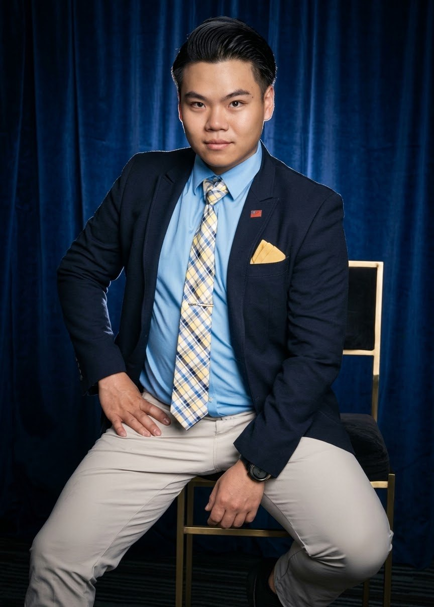
- Market research & sizing
- Supply-chain & cost modeling
- GTM & expansion decks
- Brand strategy
- Python · SQL · C++
- LLM tooling · Figma
- PCB design · Arduino
- Fusion 360 · AutoCAD
- English & Mandarin, native
- Interpreting · public speaking
- TEDx curation
- 1,500+ learners taught
Six case studies, with the numbers.
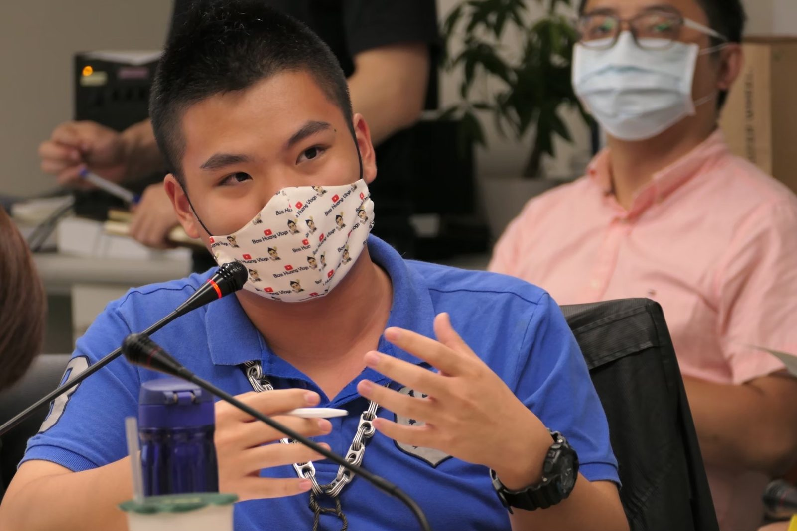
01 · New Taipei City GovernmentYouth Commissioner → Youth Affairs Bureau
Selected from 600+ nominees as the youngest member; secured the budget to stand up a new bureau, then ran 63 events and 5 strategic projects.
NT$130M secured · 0.03% selection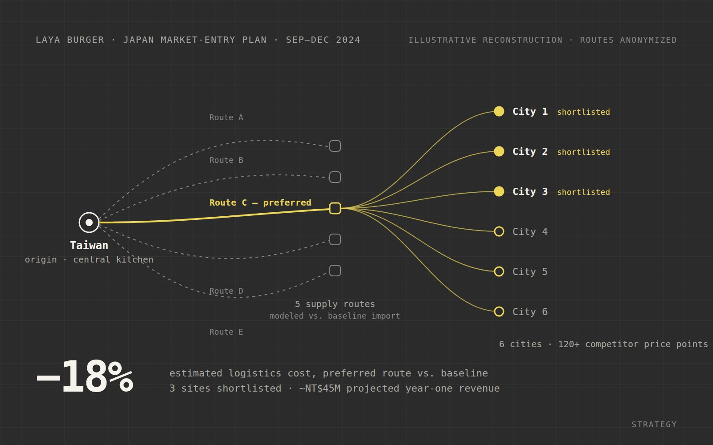
02 · Laya Burger (拉亞漢堡)Japan market-entry plan
Six cities, 120+ competitor data points, five supply routes. The recommended route cut estimated logistics cost 18%; three shortlisted sites project ~NT$45M in year one.
−18% logistics cost · ~NT$45M yr-1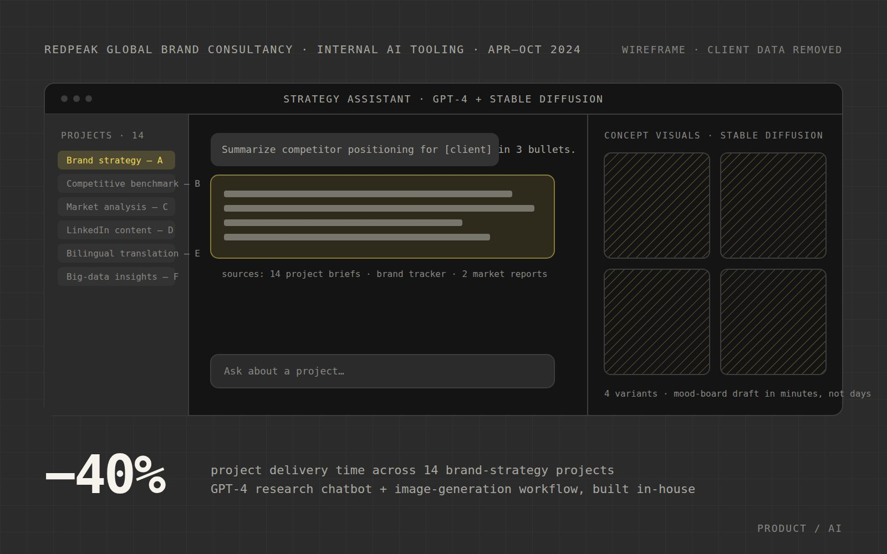
03 · RedPeak Global Brand ConsultancyGPT-4 chatbot + image-generation platform
Built internal AI tooling for a brand consultancy across 14 strategy projects, cutting project delivery time by 40%.
−40% delivery time · 14 projects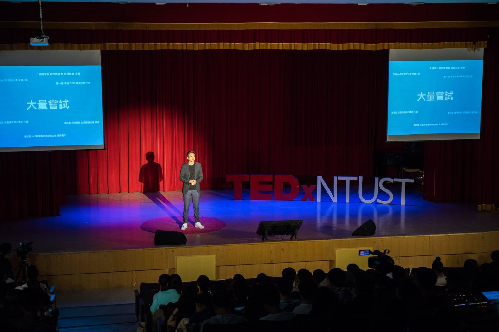
04 · TEDxNTUSTCurating TEDxNTUST through COVID
Led a 24-person international team; revamped digital strategy grew sponsorship 850% and online engagement 587% while events went remote.
+850% sponsorship · +587% engagement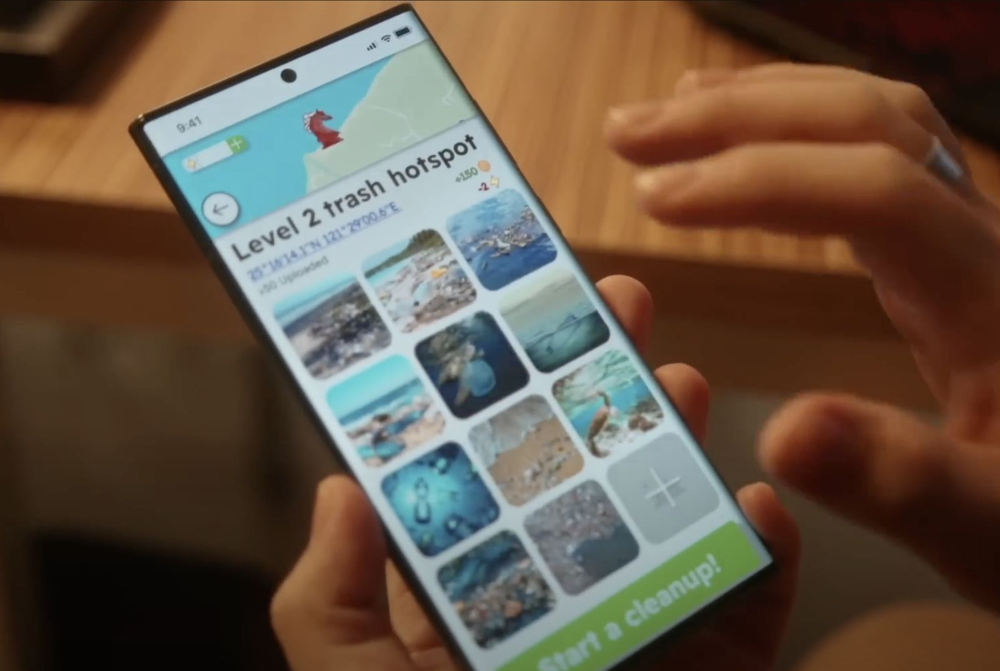
05 · EcoCoin × Econo+ Sustainable Economic Action PlatformA green economic cycle, on-chain
Founder & development lead. Eco-tokens earned for environmental action, redeemable for sustainable goods; real-time material-flow and price prediction for six industries.
6 industries · Samsung Solve for Tomorrow finalist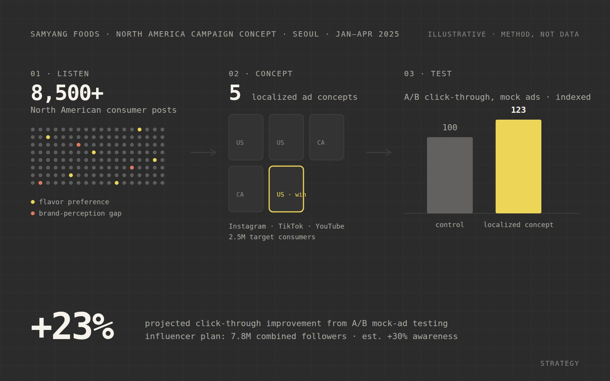
06 · Samyang FoodsNorth America campaign concept
Sentiment analysis of 8,500+ consumer posts into a 2.5M-reach campaign; five localized ad concepts A/B tested to a projected 23% CTR lift.
+23% CTR · 2.5M reachBefore the strategy, there was the soldering iron.
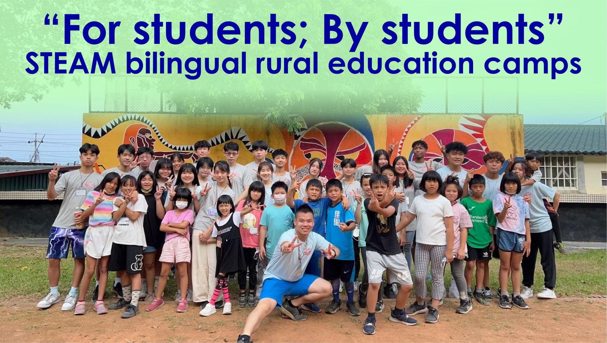
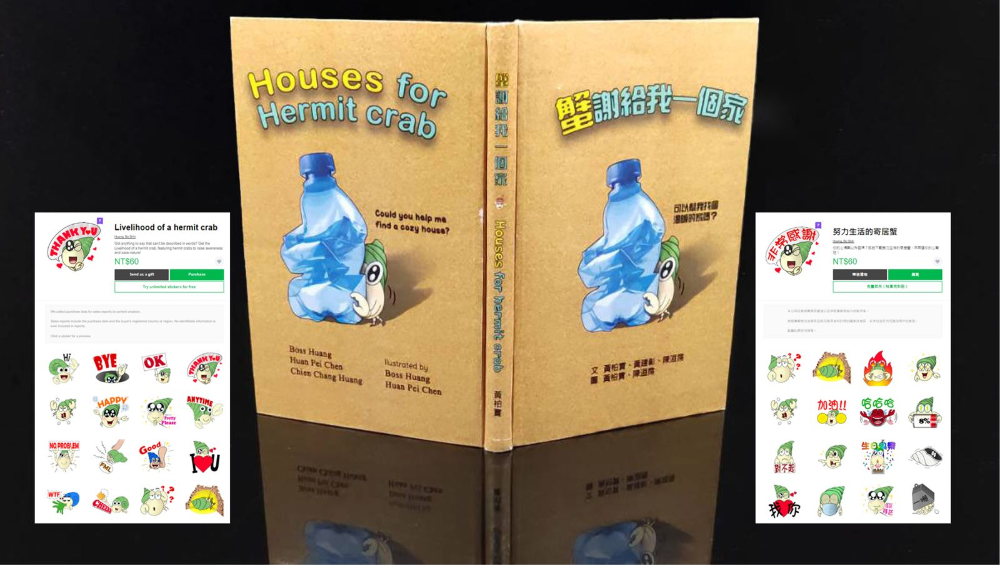
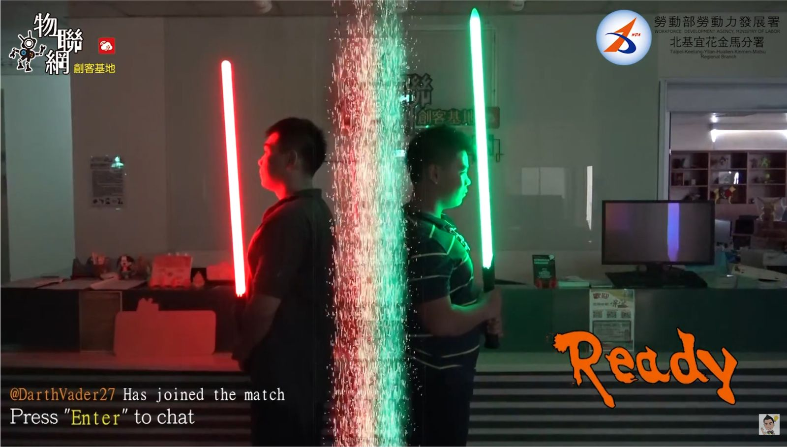
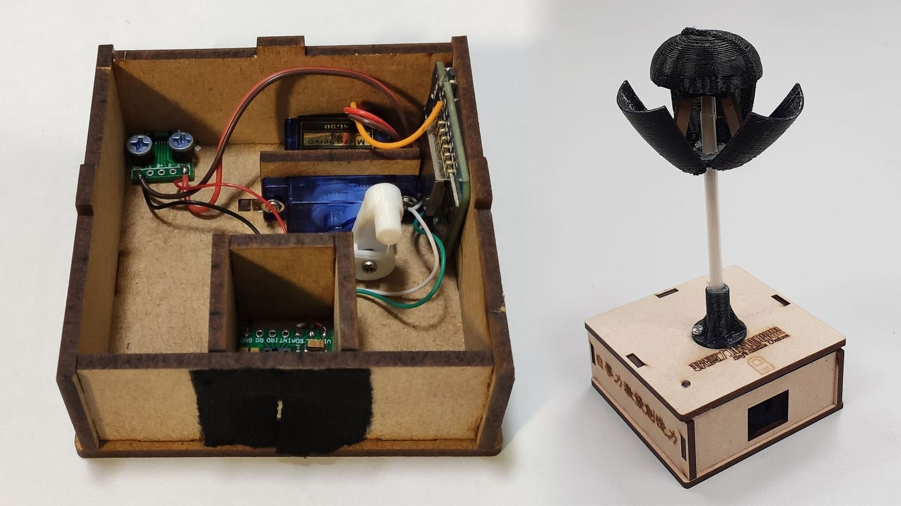
When I’m not building, I’m usually behind a camera.
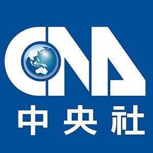
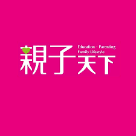
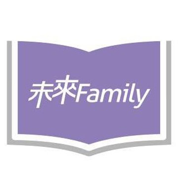
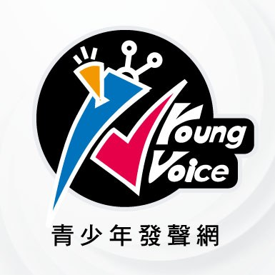
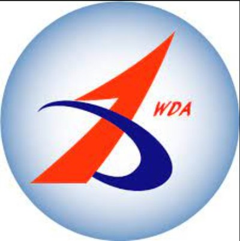
“One of the most detailed and practical pitches I’ve seen. Boss has a very sensitive business mind and is an extremely fast learner.”
“Every time, the projects lead students to explore new areas — 2D design, Python, soldering, and more. An amazing kit to teach with.”
“Well-liked by visiting children and adults alike. Easy to assemble, and it carries ecological protection into STEAM — our most popular product.”
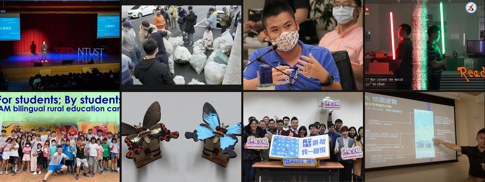
Working on something that needs strategy and a builder in the same room? Let’s talk.